Honey Bees Pick on Me
One after another truck driver checked into Xingxingxia hotel till midnight,
the empty parking lot had filled with a variety of trucks when I got up to watch stars late at night.
I felt thankful that the hotel owner did not let me share a room with the truck drivers, so I slept soundly. All the truckers snored very LOUDLY.
I wanted to get an early start (around 6:00am) when it was still cool and attempted to eat breakfast before I set off.
However, the whole town was sleeping except me.
Nothing was open and nobody was selling breakfast till 7:00am.
Rather than wait for a breakfast, I got on the road and started a long ride today.
The key to finish a 200 km ride was to cover 100 km before noon when the wind was still gentle in the morning.
Even if the wind was picking up and slowing me down in the afternoon,
I could manage to get into Hami before sunset, but would be totally dog-tired though.
(Note: Hami is also known as Qumul)

Xingxingxia was asleep - no yummy breakfast. Filling up my bottles, I said farewell to the little town and headed off.

Today’s breakfast on the bike was three oranges, half a bag of peanuts, a few handfuls of raisins, water, and a large hotdog later.
With only three bottles of water, no matter how frugal I was with the water, I would probably finish it up by noon.
It was impossible to get to Hami without refilling the water.
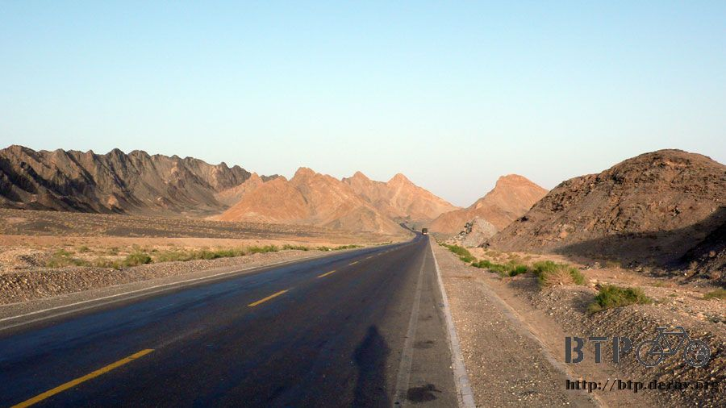
The only place having food, drink and accommodation in the vast Gobi desert between Xingxingxia and Hami was named Luotuojuanzi.
(Note: Luotuojuanzi in Chinese means camel corral)
The map showed two names, Kushui and Dunyang, along the 150 km desert road.
I thought to myself, “If there were names on the map, would they be inhabited?”

When I passed by, all that awaited me was just a road sign and the same desert, thirst, and long road.

Some tough plants could still grow in the undulating desert,
but sometimes it was purely sterile and had no sign of life.
What fascinated me was the name, Gobi desert.
The desert used to be an extensive ocean long time ago, however it was dried up now.
What was left is the beautiful name. OK, that was my imagination running wild, the Gobi desert was never ever an ocean.

I like shabby stuff and barren landscape which helped me sort out what’s the point of life.
On average, I spent 10 hours each day on the bike looking at the land.
When the landscape changed from green to barren or alive to dead, I was affected deeply.
What are people after? The answer is obvious that people are seeking for easy,
comfortable and convenient life and the necessity to sustain their lives.
If we have the choice for a better life, shall we make an effort to protect the earth?
Humans cannot survive alone, they need trees, mountains, clouds, the sun.
If everybody does a little something, it’s a cumulative effect. What’s more,
even the smallest of actions will “add up over time” to make a major impact on the environment.
If humans have the extraordinary power to destroy the earth,
then we should recognize our responsibility to restore the earth’s ecosystems.
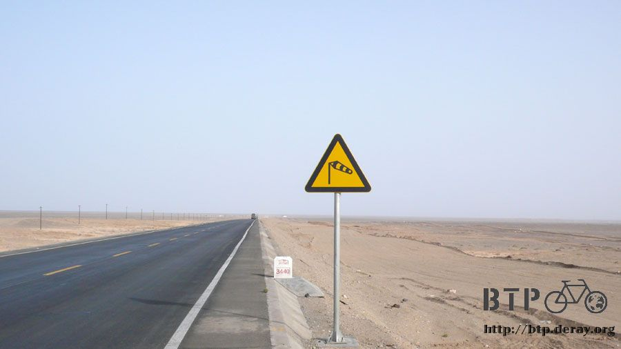
Since our own well-being is dependent on the well-being of the earth.
Unless the many places on earth survive, we cannot survive.
If we do not do it today, the earth will be completely consumed and destroyed.
The vital earth will be just part of the history of the universe.
Restore the earth before it is too late.

Parallel to Route 312 was a new highway from Xingxingxia to Hami.
It was still under construction and estimated to be finished in 2008.
Along the road, many road workers worked hard in the desert.
They would call out loudly to get my attention, and then waved at me. I would also wave back to acknowledge them.
There must be camps for road workers to stay in desert. I was in hope of seeing stores in the desert as at Shuangta Dam.
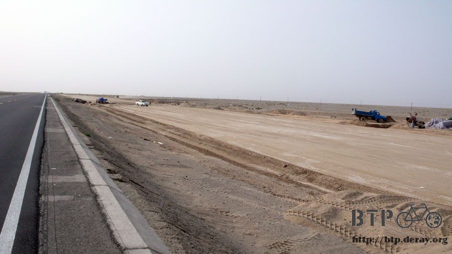
However, there was nothing at all happening on the road except the wind started picking up as the temperature was going up.
I had only half bottle of water left by noon, even though I had cut down water consumption greatly.
The good news was I had done 100km at noontime.
It was likely that I could make it to Hami today as long as I was not thirsting to death in the desert….

Spotting a road works’ camp in the desert, I decided to check it out.
Even if there was nothing there, I had nothing to lose but rode a few more meters.
I asked the first person I saw in the camp “Do you sell beverage?”

This person was the supervisor in charge of the construction department.
He said nothing for sale, walked into the inner room, and then brought back a bottle of green tea for me.
“It is hot, you must be thirty, take this” said the supervisor.

Tears welled up in my eyes. I was invited to his office for a rest.
He was busy inspecting the work quality done by the road workers from various places.
When having a short break, the supervisor said “eat lunch with us in the dining hall later”
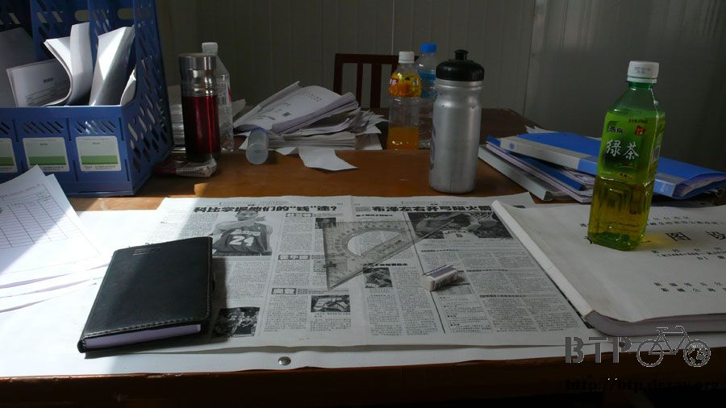
I was always so lucky to come across many nice people who would help a stranger from far away for nothing but a thank-you.
Taking out three empty water bottles, I asked the supervisor where to refill my water bottles.
“There is a small 24 hr water boiler next to the large water tank outside of the camp. Hot water is ready at anytime.” said the supervisor
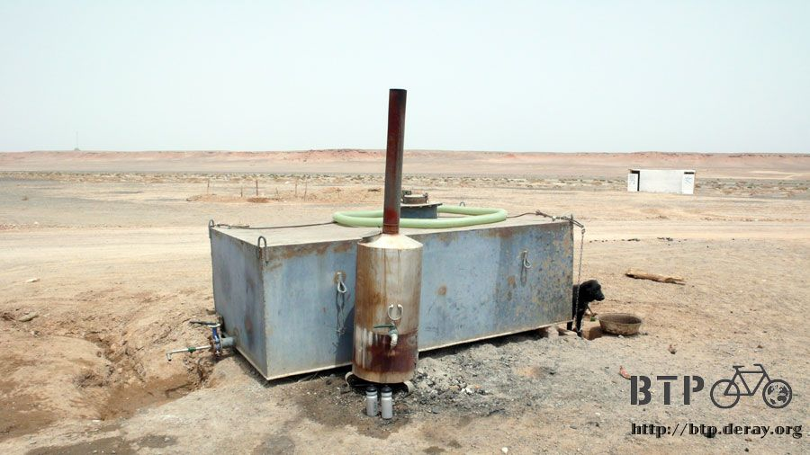
I did not see a large black dog beside the water tank at first and was startled when seeing him.
He was just a nice guard dog and did not bite.
The water bottles became soft after being refilled with hot water. I laid them in shades to cool down.

The road workers got up at 8:00am, had lunch break from 1:30pm to 3:00pm, and then kept working till 8:00pm for dinner.
They worked seven days a week with no weekends.
I was catching some zz’s in the office before lunch when the supervisor’s assistant woke me up for lunch.
The dining hall was located behind the camp and a menu was posted on the wall.
They got better meals every Wednesday and Sunday. Lunch for Monday (today) was lamian.
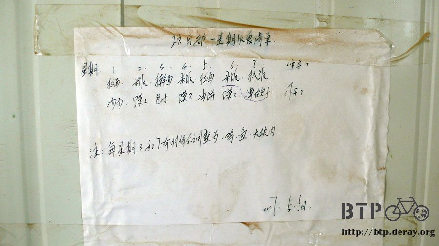
Everybody brought their own chop sticks and laid their own large bowls/lunch boxes on the table outside of the kitchen,
and then the cook filled the bowls/lunch boxes with noodles and sauce.
The bigger the bowl was the more noodles it got!

Without my own tableware, I walked into the kitchen, asking the cook if he had a bowl or something to make me a noodle lunch.

It turned out my lunch was braised lamb lamian on a big plate with many sweet vegetable stems - free and tasty!
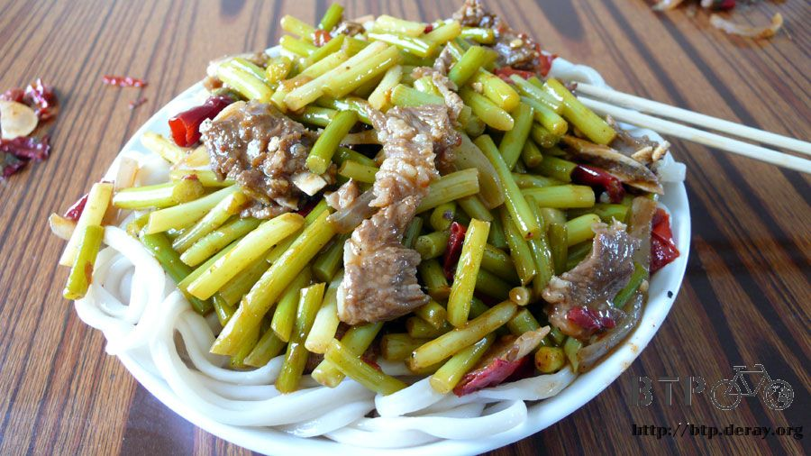
Lunch was finished after 2:00pm. During their break time,
I was off with the gratitude from the bottom of my heart since I had a good 100 km ride to look forward to.
Many thanks for all their help!
Some insects were flying along the desert road– honey bees. Unbelievable!
No beekeepers, no beehives, and no flowers in the desert -- where did they come from?
I did not care at the beginning, just felt amazed. However, as I was climbing a steep hill and slowing down a bit,
the honey bees started catching up to me.
They kept bumping into my head, buzzing my ears and landing on my hands, clothes and face.
I shook my head to get rid of them from my face at first. Later on, I was a bit irritated and started flailing my hand over my head.
It had no effect on the result but it made the bees became more aggressive.
When I sensed that, I took off my hat and swatted them away with my hat.
It only made things worse, so that the bees were pissed off and started attacking and stinging me.
Since I had sunglasses and a gauze mask on, the printed bandana became their attack target.
My forehead where it was not covered by the bandana got stung.
A few bees stung me on my forehead - OUCH, what an agonizing pain.
The stinger was left in my forehead skin and I had to remove it in great pain.
Oh man! I was attacked by homeless honey bees in the middle of nowhere!
I waved my hat too hard and knocked down my sunglasses.
I got stung again as picking up my sunglasses.
Are honey bees poisonous? How many bee stings a human can bear?
Way too many bees! Waving my hat only worsened the situation.
Pulling down the bandana to cover my forehead, putting my hat back on,
I crossed through to the other side and rode on the wrong side of the road where fewer bees were.
I badly wanted to speed up and escape as quickly as possible.
However, I was stuck on an uphill and could not ride as fast as I wished.
Thanks to a rush of adrenalin and passing trucks I got away.
I climbed over the hilltop, cycling like mad.
The wind made by the high-speed trucks swooshing down the road helped break up the crazy bee swarm as well.
I thought honey bees were harmless, but they just attacked me without mercy.
Wasn’t I friendly to you all the way, talking to you and avoiding the ones on the ground. Why are you treating me cruelly in return?
I stopped and applied a thick layer of Mentholatum to the bee sting area to reduce the toxicity and stayed on the wrong side of the road.
I looked at the bees across the road hovering in the air. It seemed that they wanted to sting me if I ever rode back.
When checking up my forehead, I saw a purple red bump which hurt a bit but was ok,
and there was a stinger still staying in the forehead skin.
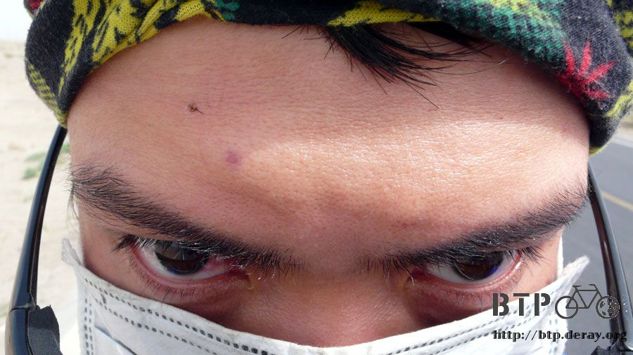
Later on, I rode back on the correct side of road.
When I was on the wrong side of road, the wind made by the high-speed trucks almost pushed me off the road to the desert.
It felt like I was a small insect being hit flat by a huge air-made flyswatter.
Arriving at Luotuojuanzi around 5:00pm, I was back to civilization. Hey, congratulate me!
I had done another 150 km of the Gobi desert safely!
This place was just like a truck stop. I bought a bottle of cola and two ice pops at a small store to celebrate my getting out of trouble.

Two questions for the store owner.
“Why it is called Luotuojuanzi?”
There was no camel whatsoever, to reflect the truth, it should be named “Truck Corral”
“It was said that there were camel caravans here a long long time ago.
It was called Luotuojuanzi since she was born” said the lady owner.
“How come there are so many honey bees along the road?”
“Got Stung?” said the lady owner with laugh on her face
I held up three fingers to show my poor situation.
She said it was quite painful right after being stung, but it would be fine within 2 days.
They often got stung and had become used to it.
The beekeepers shipped their bees by truck. Because the trucks were overloaded,
the police kicked them off the national highway.
The bee trucks were allowed to get back on the national highway only at night.
When the trucks were waiting on the roadside, the bees flew out of their beehives.
In addition, some stupid bees did not wear seatbelts and fell out the beehives along the road.
Since they could not catch up to their trucks, they were left out on Route 312 and became homeless honey bees.
So, they were doomed to a death in the desert – but before that, they had time to buzz around or sting some poor guy like me occasionally.
I felt pity for them and did not hate these bees anymore, even I just had a hostile fight with them.
Die in peace.
About 60 km to Hami, I could either get there around 9:00pm, or call it a day and stay in Luotuojuanzi tonight.
What the heck! I had done 150 km already, should the last 60 km matter?
Kudos to the cola and ice pops, I was powered up again.
At the dusk, the gust wind would die down and the low thick clouds would block the annoying afternoon sun.
Removing the gauze mask and taking off my hat, I set off into the desert once more.
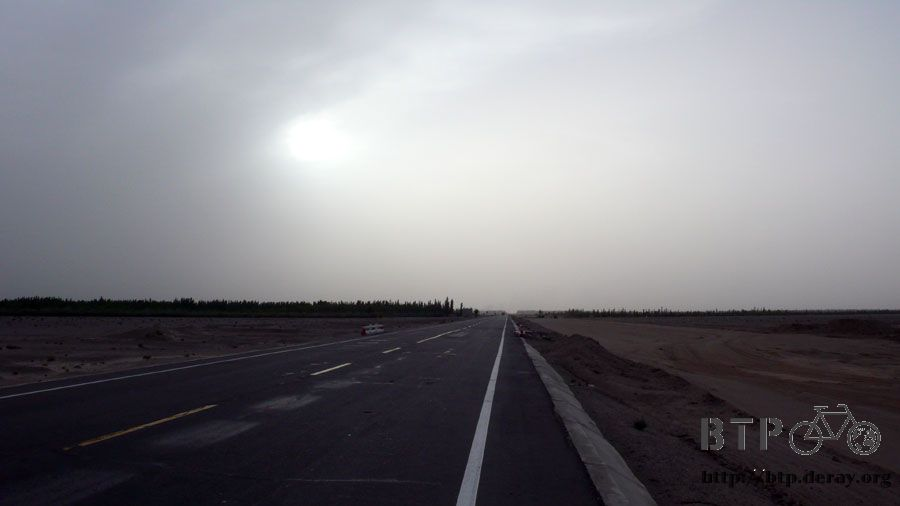
In the solitary atmosphere, I thought of the people that I had met and the thing that had happened.
The vivid memories were frightening,
what had happened reappeared one after the other – it felt like a man looked back over his life on his death-bed.
It is unbelievable that I am traveling at this place, at this moment.
How many decisive encounters make me who I am as of today?
At 9:00pm, Hami was only 5 km away but the entire roadway was dug up like a WWI trench.
I did not want to stay in the suburbs, so the last 5 km was finished by walking or riding.
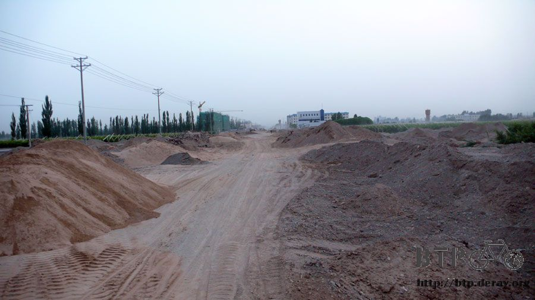
Then, the bustling city was in sight.
Tables and chairs lined the ten meter wide sidewalk, taking it up entirely.
Hundreds of people were having BBQ or clay pot, drinking beers, and having fun.

I had made up my mind without a second thought that I would find a hotel near this place and came back to enjoy myself as well.
Spotting a hotel on the corner, I was about to yell out if anybody was there,
when the hotel owner came out. His family was heading for dinner.
If I was one minute later, nobody would have taken care of me – very lucky.
I might take a break in Hami for a few days, not decided for how long though.
I just asked a room for two nights - 20 RMB per night.
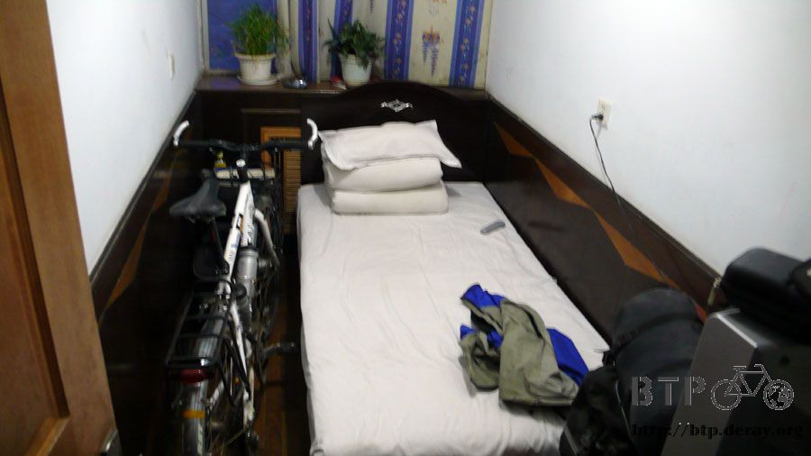
A single room was usually quite small. No matter how small the room was,
I always insisted on keeping Dido in the room with me.
“I can not sleep without my bike next to me” – that was my answer if the hotel owner ever asked me.
I took a comfortable sponge bath.
My dinner was waiting for me on the bustling street.
I biked hard to Hami today and deserved an award – a great meal.
I picked and chose a yummy BBQ restaurant, and ordered grilled lamb kebab,
grilled lamb steak, baked biscuits and a ice cold Tsingtao Beer.
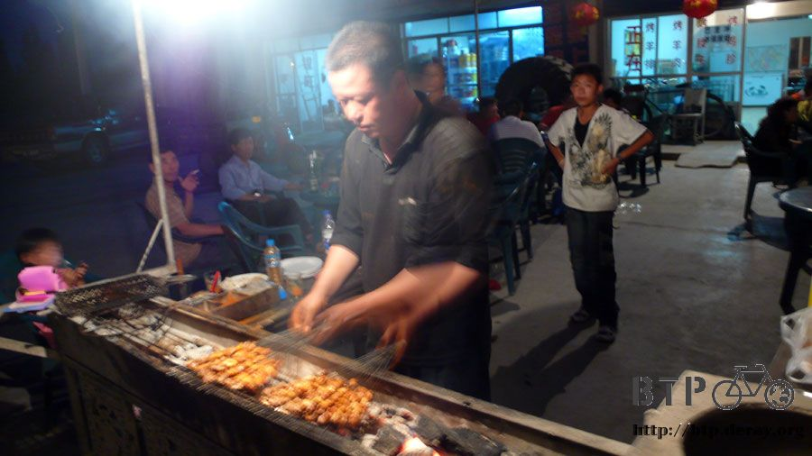
Enjoying good food was always the happiest time of the day. It was telling me that I had finished up a hard day’s work.
Thanks to the honey bees, you made another meaningful moment in my life.